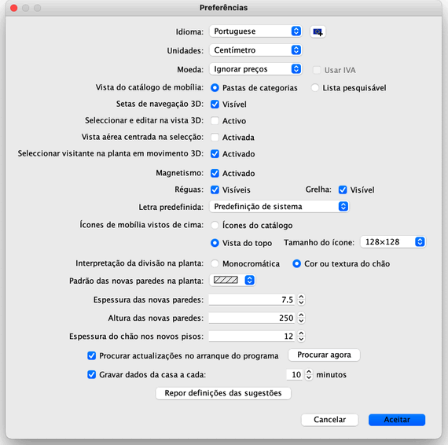

Para editar as suas preferências no Sweet Home 3D, escolha Sweet Home 3D > Preferências... em Mac OS X ou
Ficheiro > Preferências... nos outros sistemas.

Na janela das preferências, a lista pendente Idioma permite-lhe escolher o idioma usado no ambiente do utilizador do
Sweet Home 3D e o botão à direita permite-lhe importar mais algumas bibliotecas de idiomas adicionais, com a
extensão de ficheiro SH3L.
A lista pendente Unidades permite-lhe escolher as unidades mostradas nas réguas e grelhas da planta da casa, e para os
comprimentos e áreas.
Os botões rádio Pastas de categoria e a Lista pesquisável permitem-lhe escolher como deve ser
apresentado o catálogo de mobília em cada janela do Sweet Home 3D.
A caixa Setas de navegação 3D mostra um conjunto de botões que ajudam na
navegação na vista 3D.
Quando ativa, a opção Vista aérea centrada na selecção centra a vista aérea 3D nos
itens seleccionados na planta da casa. Se não houver itens seleccionados ou a opção estiver desactivada, roda em
torno do centro da casa, que pode variar em função dos itens que contém.
Se activa, a opção Seleccionar visitante na planta ao mover em 3D vai seleccionar e mostrar o visitante virtual desenhado
na planta 2D sempre que faça um movimento na vista 3D no modo Visita virtual. Deve desseleccionar esta opção se não quiser
perder a selecção actual na planta e/ou alterar a parte visível da planta a cada movimento na vista 3D.
A caixa Magnetismo ativa ou desativa esta opção, usada durante o desenho de paredes
e a disposição da mobília. O magnetismo também pode ser desactivado/activado com o ícone Íman,
encontrado na barra de ferramentas 3D do Sweet Home.
A caixa Réguas permite mostrar ou ocultar as réguas à volta da planta.
A caixa Grelha permite mostrar ou ocultar a grelha no fundo da planta.
A lista pendente Letra predefinida permite escolher a letra usada para textos mostrados na planta (i.e. nome de mobília,
nome e área de divisões, comprimento de linhas de cota e
letra predefinida de textos livres).
Os botões rádio Itens do catálogo e Vista de cima permitem-lhe escolher como é que a mobília
é desenhada na planta (ver imagens abaixo). Quando a opção Vista de topo está seleccionada, a lista pendente Tamanho do ícone
permite-lhe seleccionar o tamanho em pixels dos ícones desenhados na planta 2D. Tamanhos grandes dão bonitas plantas desenhadas no ecrã,
imprimidas e exportadas em formato SVG, mas requerem mais espaço em memória.
Os botões rádio Monocromático e Cor ou textura do chão permitem-lhe escolher se as divisões
devem ser desenhadas na planta preenchidas com a cor ou textura que escolheu para o seu chão, ou com cinzento (imprimido a branco).
A lista pendente Padrão das novas paredes na planta permite-lhe escolher o padrão de preenchimento das paredes a
criar uma vez fechada esta janela.
O valor Espessura das novas paredes especifica a espessura das paredes a criar uma vez fechada esta janela.
O valor Altura das novas paredes especifica a altura das paredes a criar uma vez fechada esta janela.
O valor Espessura do chão dos novos pisos especifica a espessura do chão dos novos pisos a criar uma vez fechada
esta janela.
Quando seleccionada, a opção Procurar actualizações no início vai verificar se há
actualizações do Sweet Home 3D disponíveis sempre que o programa arranca, e mostra-as numa caixa de diálogo.
Esta opção também testa a disponibilidade de actualizações nas bibliotecas de mobílias (ficheiros
SH3F), de texturas (ficheiros SH3T), de idiomas (ficheiros SH3L) e plug-ins (ficheiros SH3P) que tenha instalado, dependendo de como estejam
configuradas.
O valor do campo associado à caixa Gravar casa para recuperação define o tempo em minutos entre cada
gravação de segurança dos ficheiros de casas abertos. Estas casas são automaticamente gravadas em ficheiros
privados, que serão usados para recuperação de dados no próximo início do Sweet Home 3D se o programa
terminar bruscamente (por exemplo, uma falha de energia).
Finalmente, o botão Limpar as definições de sugestões repõem as respostas que deu na caixa
Não mostrar a sugestão novamente mostrada nas caixas de diálogo que surgem quando clica em algumas
ferramentas. Isto significa que todas as sugestões e truques vão voltar a aparecer.
 |
|
 |
Planta com itens do catálogo,
chãos monocromáticos e paredes preenchidas com um padrão paralelo |
Planta com ícones de mobília vistos de cima,
chãos com cores, e paredes preenchidas a preto |
|